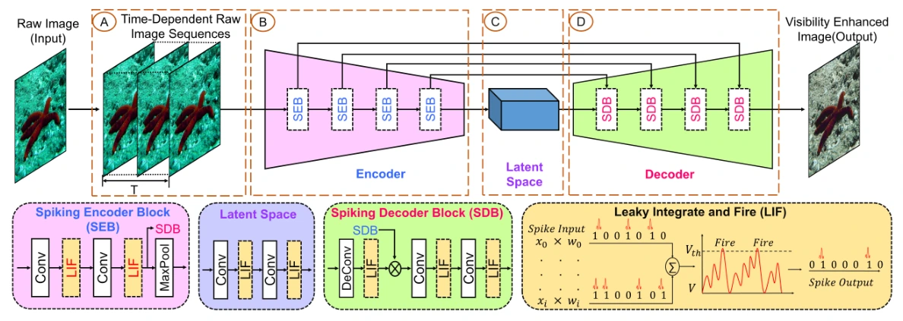

UIE-SNN
A convolutional spiking encoder–decoder for underwater image enhancement. The study examines how neuron settings and dataset choice affect inference.
arXiv preprint · 2025
Method
UIE-SNN uses a 19-layer convolutional spiking encoder–decoder with skip connections. The model is trained directly with surrogate-gradient backpropagation through time.


Evaluation
The preprint reports qualitative comparisons on UIEB and EUVP test images and studies how the training dataset, firing thresholds, and number of timesteps affect spiking activity and estimated inference energy.
Preprint and code
First and corresponding author on the preprint. Underwater Image Enhancement by Convolutional Spiking Neural Networks. Source code on GitHub.